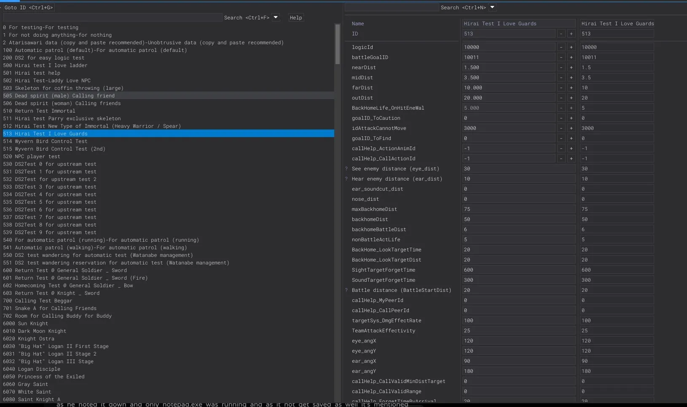
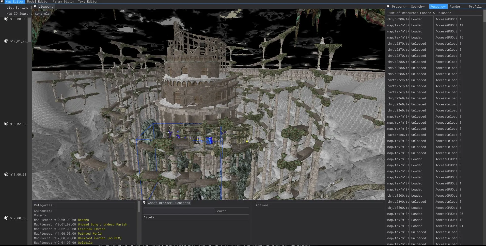
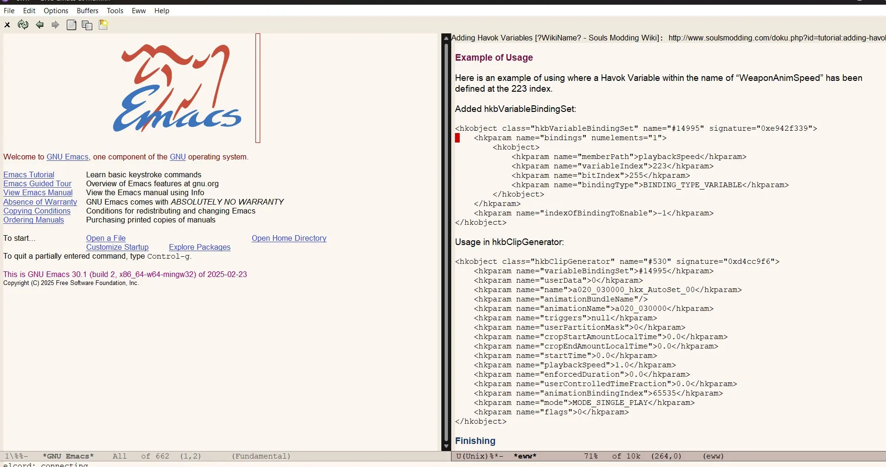
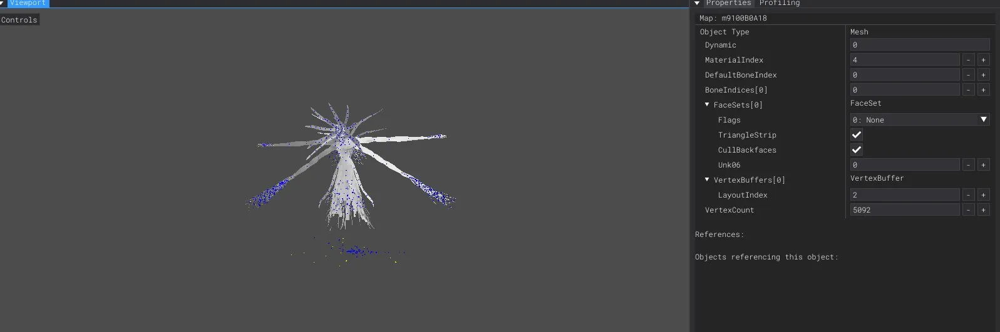
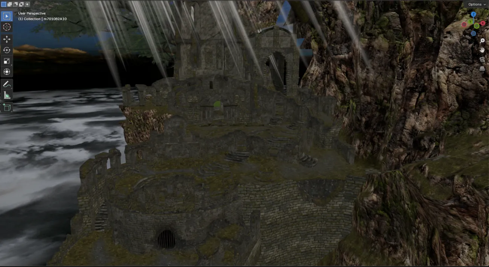
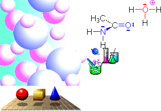
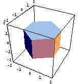

C, C++, Python, Bash, x86_64 Assembly
Security & AnalysisReverse engineering, binary exploitation, coverage-guided fuzzing, symbolic/concolic execution, memory forensics, ASan, UBSan
ToolsBinary Ninja, Ghidra, radare2, x64dbg, AFL++, syzkaller, QEMU, lldb, Volatility, CMake, Bazel, Nix, Emacs
Librariespwntools, Frida, Miasm, Triton
For the past few years, I've been working on an entirely new Dark Souls DLC featuring new areas (using unused assets from Bloodborne and Dark Souls 2 cut content), original NPC questlines, weapons, spells, and a vision focused on restoring the spark lost during the rushed second half of the original game. I've also implemented a custom lighting documentation system for the PTDE edition.





Pages: 6
Blog Posts: 15
Projects: 14
Status: JavaScript-free
Theme: Windows 95





Optimized for Netscape Navigator 4.7
♥ Under Construction Since 1999 ♥